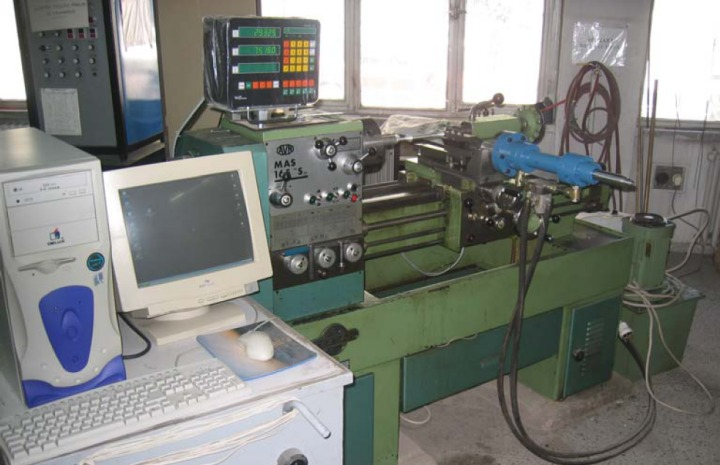
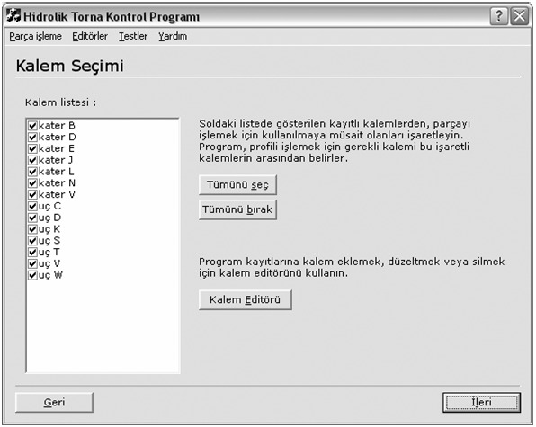
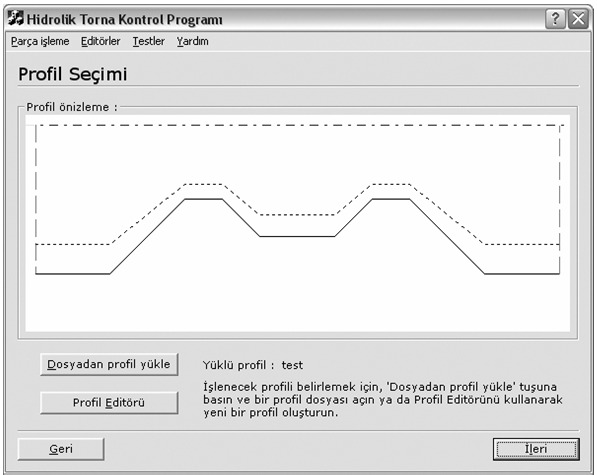
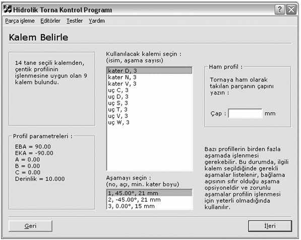
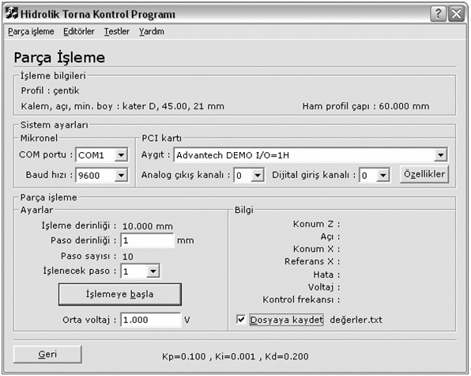
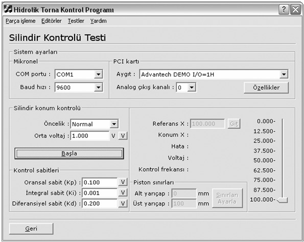

|
3.2. Programýn Kullanýmý
Kalem seçimi
Kalem seçimi penceresi, parça iþlemenin ilk basamaðýdýr. Penceredeki kayýtlý kalemler listesinde gösterilenlerden, parçayý iþlemek için kullanýlmaya uygun olan takýmlar iþaretlenir (Þekil 6). Program, profili iþlemek için gerekli kesici takýmý bu iþaretli kalemlerin arasýndan belirler. Tümünü seç ve tümünü býrak tuþlarý listenin tamamýný seçer veya býrakýr. Program kayýtlarýna kalem eklemek, düzeltmek veya silmek için kalem editörünü kullanýlýr.
Profil Seçimi
Bu pencerede kayýtlý bir profil yüklenebilir ve profilin ön izlemesi de görülür (Þekil 7). Ön izleme penceresinde en üstte mavi merkez çizgisi ve kenarlarda profil sýnýrlarýný gösteren kýrmýzý çizgiler vardýr. Düz beyaz çizgi profili gösterirken, nokta nokta olan sarý çizgi, varsa, ovalliðin dip çapýnýn yerini gösterir. Yeni bir profil tanýmlamak için profil editörü kullanýlýr.
Kalem Belirleme
Parça iþlemede kullanýlacak kalem bu adýmda belirlenir (Þekil 8). Uygun kalemler listesinden bir kalem seçildiðinde, o kalemle iþleme yapýlmasý durumunda gerekli aþamalar da alttaki listede sýralanýr. Kullanýcý kalemi ve aþamayý seçer. Ayrýca bu pencerede ham parçanýn çapý da belirtilir. Profilin geometrik analizinin sonuçlarý, profil parametreleri bölümünde görülebilir. Bu analiz ve parametreler raporun ileriki kýsýmlarýnda açýklanmýþtýr.
Parça iþleme
Bu pencere parçanýn iþlendiði penceredir (Þekil 9). Konum okuma, referansa göre hata bulma ve düzeltme sinyali gönderme iþlemleri bir döngü içinde sürekli yapýlýr. Paso derinliði gerekiyorsa deðiþtirilebilir. Paso derinliði, profil iþlenirken her bir pasoda milimetre cinsinden ne kadar derinlikte talaþ kaldýrýlacaðýdýr. 1. pasodan iþlemeye baþlanýr, pasolar bittikçe program bir sonrakine geçer ve en son paso tamamlandýðýnda parça iþlemesinin tamamlandýðýný bildirir. Orta voltaj deðeri, sistemdeki güç kaynaðýnýn ayarlý olduðu deðerde olmalýdýr. Program, sýfýrla orta voltaj deðerinin iki katý arasýnda gerilim üretecektir. Ýþleme sýrasýndaki bilgiler istenirse bir yazý dosyasýna kaydedilebilir.

Þekil 5. Deney düzeneðinin genel görüntüsü
Kalem Editörü
Kayýtlý kalemlere kalem eklemek, düzeltmek veya silmek için kullanýlan penceredir. Ekle butonu ile açýlan pencerede isim kýsmýna eklenecek kalemin en fazla 15 karakterden oluþan ismi yazýlýr. Kalemin uç noktasýndan dikey indirilen doðruya göre sol kenarýn yaptýðý açý Sol açý, sað kenarýn yaptýðý açý Sað açý, bu iki açýnýn toplamý ise toplam açýdýr. Matematiksel iliþki nedeniyle kolaylýk olmasý açýsýndan program herhangi iki açýnýn girilmesi durumunda üçüncüsünü hesaplayýp yazar.

Þekil 6. Kesici takým (kalem) seçimi penceresi

Þekil 7. Profil oluþturma penceresi
Profil Editörü
Bu pencere yardýmýyla yeni profiller oluþturulabilir, düzeltilebilir. Karmaþýk bir profil istenirse, Microsoft Excel programýnda oluþturulan bir z ~ x tablosu "*.txt" türünde kaydedilir ve bu penceredeki "dosyadan noktalarý oku" fonksiyonuyla açýlýr ve o noktalarýn oluþturduðu profil yüklenmiþ olur. Ýsteniyorsa ovallik de bu pencerede belirtilir. Küçük çap, büyük çapa göre sabit bir eksi deðerle ya da bir çarpanla ifade edilebilir.

Þekil 8. Kalem belirleme penceresi

Þekil 9. Parça iþleme penceresi
COM Portu Testi
COM portuna baðlý olan konum okuma cihazýnýn testi bu pencereden yapýlýr. Cihazdan eksen deðerlerini okuma ve eksenlere deðer yazma iþlemleri yapýlabilir. Bu pencerede aygýtýn baðlý olduðu COM portu, aygýtýn ayarlý olduðu baud hýzý ve arka planda çalýþan koordinat okuma program kýsmýnýn önceliði belirlenir. Portu aç'a basýldýðýnda iletiþim kurulmaya çalýþýlýr. Bir hata yoksa, iþaretli eksenlerin deðerleri sürekli okunup yazýlýr. Deðer kutusuna yazýlan rakam, istenen eksenin adýndaki tuþa basýlarak yüklenebilir. Okuma frekansý da bu pencerede belirtilmektedir.
PCI Kartý Testi
Sistemdeki PCI kartýnýn analog voltaj çýkýþý ile dijital veri giriþi fonksiyonlarýnýn testi için bu pencere kullanýlýr. Voltaj kutusuna girilen tam veya noktalý deðer, Gönder tuþuna basýlarak kanal kutusunda seçili kanala yollanýr. Eðer Voltaj kutusuna girilen deðer silinmiþse yollama baþarýlýdýr. Eðer hala duruyorsa yollama baþarýsýzdýr. Bunun sebebi kanalýn ayarlý olduðu aralýðýn dýþýnda deðer girilmesi olabilir. Seçili kanalýn çýkýþýnda, yeni bir deðer yollanana kadar ayný voltaj olacaktýr. Herhangi bir zaman "Özellikler" tuþuna basýlarak o anda seçili olan aygýtýn, sürücüsünden okunan özellikleri bir pencerede gösterilir.
Silindir Kontrolü Testi
Bu pencere, sistemin silindir konumu kontrolünün testi için yapýlmýþ penceredir (Þekil 10). Kullanýcý, kontrol sabitleri bölümüne girdiði deðerlerle, istediði tipte otomatik kontrol yöntemini deneyebilir. Ýþlem baþlatýldýðýnda, pencerenin sað tarafýndaki kaydýrma çubuðuyla pistonun konumu kontrol edilebilir. Kaydýrma çubuðunun aralýðý, piston sýnýrlarý bölümüne girilen deðerlerle ayarlanabilir. Orta voltaj ve kontrol sabitleri deðerlerinin sað tarafýndaki V butonlarý, o deðerin varsayýlan deðerine geri alýnmasýný saðlar.
3.3. Program Algoritmalarý
Kalemin Belirlenmesi
Parça iþlemeye baþlamadan önce iþlenecek profil, baðlý kalem geometrisi ile açýsý bilinmeli ve bu deðerlere göre referans kalem deðerleri hesaplanmalýdýr. Referans deðerlerinin hesaplanmasýndaki parametreler profil ve kalem geometrisi olduðundan ilk önce profil girilmeli; sonra iþlemede kullanýlacak kalem seçilmelidir. Bu noktada bir profil için herhangi bir kalemin herhangi bir baðlama açýsýyla kullanýlamayacaðý sorunu ortaya çýkmaktadýr. Bu yüzden programýn buradaki görevi, verilen profile göre kayýtlý kalemlerden hangilerinin, hangi baðlama açýsý ile kullanýlabileceðini bulmaktýr. Program tarafýndan baðlama açýlarýyla beraber ortaya
çýkarýlan uygun kalem listesinden kullanýcý istediði
kalemi seçecektir.

Þekil 10. Silindir kontrolu test penceresi
Kalem belirleme iþlemi, profil analizinin ardýndan her bir kalem için iþleme aþamalarýnýn, baðlama açýlarýnýn ve kater uzunluklarýnýn bulunmasý aþamalarýyla olur.
Profil Analizi
Uygun kalem geometrisinin bulunmasý için önce sadece profil üzerinde çalýþýlarak bazý profil parametreleri hesaplanýr. Bu profil parametreleri Þekil 11'de gösterilmiþtir. Kalem seçimi için profilin yaptýðý en büyük açý (EBA) ve en küçük açý (EKA) hesaplanýr. Çünkü profil açýsýnýn kalemin kenar açýsýna en çok yaklaþtýðý yerler bu açýlarýn görüldüðü yerlerdir. Eðer kalem bu açýlarý iþleyebiliyorsa profildeki diðer açýlarý da iþleyebilir. ebx (en büyük x) ve ekx (en küçük x) deðerlerinden H (profil derinliði) bulunur. Profil analizinin algoritmasýna ait akýþ þemasý Þekil 12'de görülmektedir.
Kontrol Ýþlemi
Parça iþleme penceresinde "Baþla" tuþuna basýlarak kesme iþlemi baþlatýldýðýnda, konum okuma, referansa göre hata bulma, istenen tipte kontrol hesabý ve düzeltme sinyali oluþturma iþlemleri bir döngü içinde kesintisiz yapýlmaktadýr. Kontrol iþlemi döngüsünün akýþ þemasý Þekil 13'de verilmiþtir.
|